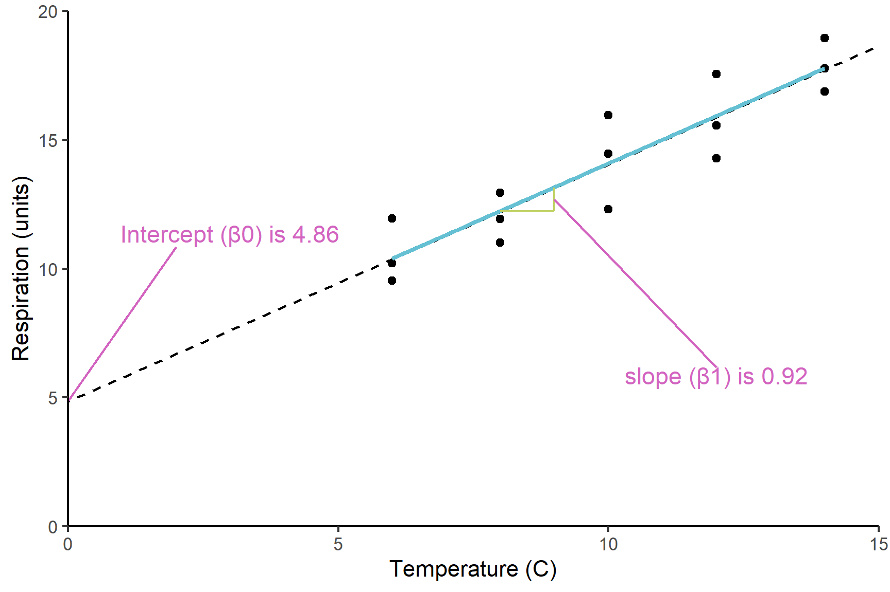

shrimp <- read_table("data-raw/shrimp.txt")12 Single linear regression
First draft
You are reading a work in progress. This page is a first draft but should be readable.
12.1 Overview
Single linear regression is an appropriate way to analyse data when:
- You have two continuous variables
- One of the variables is explanatory and the other is a response. That is, one variable, the \(x\), “causes” the \(y\).
- The explanatory variable has been chosen, set or manipulated and the other variable is the measured response. This is sometimes described as the \(x\) being “sampled without error”
- The response variable, \(y\), is randomly sampled for each \(x\) with a normal distribution and those normal distributions have the same variance.
- The relationship between the variables is linear
Applying a single linear regression to data means putting a line of best fit through it. The intercept and the slope of the true population relationship is estimated from the sample you have. We test whether those two parameters differ significantly from zero.
12.1.1 Reporting
Reporting the significance of effect, direction of effect, magnitude of effect for a single linear regression means making the following clear to the reader:
the significance of effect - whether the slope is significantly different from zero
the direction of effect - whether the slope is positive or negative
the magnitude of effect - the slope itself
Figures should reflect what you have said in the statements. Ideally they should show both the raw data and the statistical model:
We will explore all of these ideas with an example.
12.2 üé¨ Your turn!
If you want to code along you will need to start a new RStudio project, add a data-raw folder and open a new script. You will also need to load the tidyverse package (Wickham et al. 2019).
12.3 Single linear regression
Three replicates water baths were set up at each of five temperatures (10, 11C, 12C, 13C, 14C). Ten Brine Shrimp (Artemia salina) were placed in each and their average respiration rate per water bath was measured (in arbitrary units). The data are in shrimp.txt.
12.3.1 Import and explore
Import the data:
| temperature | respiration |
|---|---|
| 6 | 11.94 |
| 6 | 9.54 |
| 6 | 10.22 |
| 8 | 11.01 |
| 8 | 12.94 |
| 8 | 11.93 |
| 10 | 12.30 |
| 10 | 15.95 |
| 10 | 14.47 |
| 12 | 14.28 |
| 12 | 17.56 |
| 12 | 15.56 |
| 14 | 16.88 |
| 14 | 18.96 |
| 14 | 17.78 |
These data are in tidy format (Wickham 2014) - all the respiration values are in one column with another column indicating the water bath temperature. There is only one water bath per row. This means they are well formatted for analysis and plotting.
In the first instance, it is sensible to create a rough plot of our data (See Figure 12.1). Plotting data early helps us in multiple ways:
- it helps identify whether there missing or extreme values
- it allows us to see if the relationship is roughly linear
- it tells us whether any relationship positive or negative
Scatter plots (geom_point()) are a good choice for exploratory plotting with data like these.
ggplot(data = shrimp,
aes(x = temperature, y = respiration)) +
geom_point()The figure suggests that respiration rate increases with temperature and there are no particularly extreme values. We can also see that any relationship is roughly linear.
12.3.2 Do a regression with lm()
We can create a single linear regression model like this:
mod <- lm(data = shrimp, respiration ~ temperature)And examine the model with:
summary(mod)
##
## Call:
## lm(formula = respiration ~ temperature, data = shrimp)
##
## Residuals:
## Min 1Q Median 3Q Max
## -1.7880 -0.8780 -0.1773 0.9393 1.8620
##
## Coefficients:
## Estimate Std. Error t value Pr(>|t|)
## (Intercept) 4.8613 1.1703 4.154 0.00113 **
## temperature 0.9227 0.1126 8.194 1.72e-06 ***
## ---
## Signif. codes: 0 '***' 0.001 '**' 0.01 '*' 0.05 '.' 0.1 ' ' 1
##
## Residual standard error: 1.234 on 13 degrees of freedom
## Multiple R-squared: 0.8378, Adjusted R-squared: 0.8253
## F-statistic: 67.13 on 1 and 13 DF, p-value: 1.719e-06What do all these results mean?
The Estimate in the Coefficients table give:
the
(Intercept)known as \(\beta_0\), which is the value of the y (the response) when the value of x (the explanatory) is zero.the slope labelled
temperatureknown as \(\beta_1\), which is the amount of y you add for each unit of x.temperatureis positive so respiration rate increases with temperature
Figure 12.2 shows the model and its parameters.
The p-values on each line are tests of whether that coefficient is different from zero. Thus it is:
temperature 0.91850 0.09182 10.003 1.79e-07 ***
that tells us the slope is significantly different from zero and thus there is a significant relationship between temperature and respiration rate.
The F value and p-value in the last line are a test of whether the model as a whole explains a significant amount of variation in the response variable. For a regression, this is exactly equivalent to the test of the slope against zero and the two p-values will be the same.

12.3.3 Check assumptions
Check the assumptions: All general linear models assume the “residuals” are normally distributed and have “homogeneity” of variance.
Our first check of these assumptions is to use common sense: respiration is a continuous variable and we would expect it to be normally distributed thus we would expect the residuals to be normally distributed
We then proceed by plotting residuals. The plot() function can be used to plot the residuals against the fitted values (See Figure 12.3). This is a good way to check for homogeneity of variance.
plot(mod, which = 1)
We can also use a histogram to check for normality (See Figure 12.4).
ggplot(mapping = aes(x = mod$residuals)) +
geom_histogram(bins = 5)
Finally, we can use the Shapiro-Wilk test to test for normality.
shapiro.test(mod$residuals)
##
## Shapiro-Wilk normality test
##
## data: mod$residuals
## W = 0.95115, p-value = 0.5428The p-value is greater than 0.05 so this test of the normality assumption is not significant. Note that “not significant” means not significantly different from a normal distribution. It does not mean definitely normally distributed.
Taken together, these results suggest that the assumptions of normality and homogeneity of variance are not violated.
12.3.4 Report
The temperature explained a significant amount of the variation in respiration rate (ANOVA: F = 67; d.f. = 1, 13; p < 0.001). The regression line is: Respiration rate = 4.86 + 0.92 * temperature. See Figure 12.5.
ggplot(data = shrimp,
aes(x = temperature, y = respiration)) +
geom_point(size = 2) +
geom_smooth(method = "lm",
se = FALSE,
colour = "black") +
scale_x_continuous(expand = c(0,0),
limits = c(0, 15.5),
name = "Temperature (C)") +
scale_y_continuous(expand = c(0,0),
limits = c(0, 20),
name = "Respiration (units)") +
theme_classic()